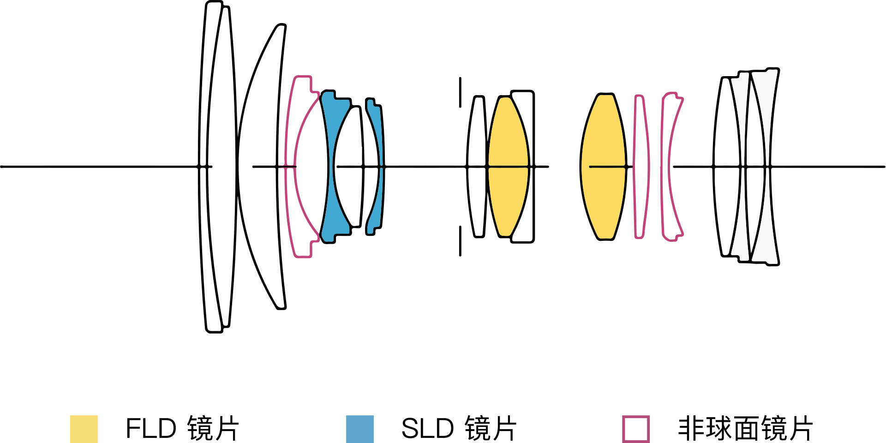

镜头（Lens）
认识镜头
- 镜头可以等效为一块 凸透镜。
- 由于不同颜色（波长）的光在同一介质的折射率不同、对曝光的控制需要、对影像“放大”“缩小”、对防抖的需求等，我们使用镜片的组合来达到理想的成像效果。
- 镜头的光学参数包括焦距、最大和最小光圈大小、视角/像场（可通过焦距计算出另一个）大小。
- 镜头的机械/电子参数包括对焦马达类型、是否电动变焦、卡口类型、防抖、滤镜尺寸等。
- 光圈为叶片式设计，可控制大小，根据镜头类型，大部分可在相机内操作，少部分需要手动拧动镜头上光圈环调整。
- 像场一定时，焦距越小，视角越大。（请注意镜头都会标注为多大的像场设计，一般而言大于或接近传感器大小。一般为大像场设计的镜头在卡口一致（或可转接）可以用于小传感器的相机，但视角会变小（相当于只取中间一部分画面））
光学结构

- 举例说明，一般镜头都会给出其镜片示意图，其中水平轴为光轴，左侧为入射（物体所在）方向，右侧为相机。竖线位置为光圈位置。
机械结构
- 举例来看：从上到下为遮光罩（可拆除），对焦环，卡口。变焦镜头有变焦环，除此之外镜头还可能有光圈环，脚架环，自定义按钮和开关等。
- 卡口的电子触点用来提供电源和通信。
- 部分镜组可通过位移来抵消抖动，请在防抖动一部分中查看。
- 镜头最前端会有滤镜螺纹，购买对应尺寸的滤镜可以拧上。滤镜中，UV 镜的作用是滤除紫外光，然而当今大部分人买 UV 镜的作用是保护前组镜片不被划伤。ND 镜的作用是减光，另还有 CPL 滤镜等，后面会提及。滤镜一定会降低画质。
- 除此之外还有一些高级玩法，例如增倍（增焦减光）、减焦增光、卡口转接等操作，本部分不再提及。
光圈
- 光圈是控制曝光的利器，然而并不是所有情况都应当调整光圈来调整曝光。
- 镜头会有一个最大光圈和最小光圈，例如 F/2.8-F/22。其他一定情况下，最大光圈越大，一般镜头越昂贵和大且重。变焦镜头分为浮动光圈和恒定光圈，这分别表示在不同焦距下的最大光圈是不一致和一致的。
- 由于光学设计原因，镜头的成像会产生球差、慧差、暗角的情况，缩小光圈可以改善慧差和暗角，但不可以改善球差。光圈过小（一般认为 F/16 及以后）会产生衍射，画质下降。现代镜头基本可以保证在最大光圈下仍然在 4K 视频的输出的情况下有较为出色的表现，无须担心全开光圈。
- 光圈会影响景深（俗称背景/前景虚化），光圈越大景深越浅（虚化效果越明显）。具体会在「了解对焦」部分阐述。
{kind=link}